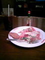

 携帯から写真二枚添付するテストです。ランチタイムのつくば駅周辺。ベンチで食事のサラリーマンが…、見えないか。今日のMyランチは右。まりやさんは御茶ノ水のShakeysで生演奏のバイトしててスカウトされたんだっけ？多分僕がそこでぼーいみーつざしぇーきーずした頃。三十年近い昔だけど、味が変わった外食チェーンが多い中比較的味が変わってない方だと思います。しかしランチバイキング値段上がったんじゃないか？昔は五百円くらいだった気が、違ったかなあ…。
